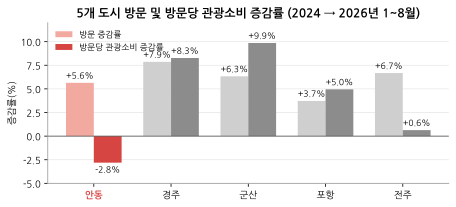
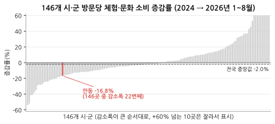
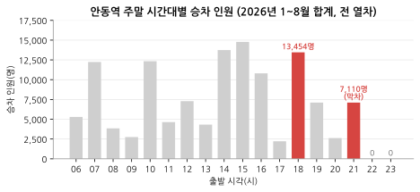
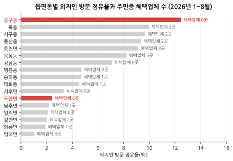
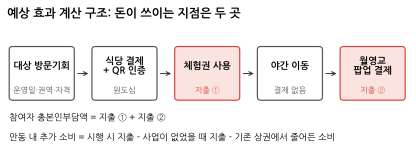
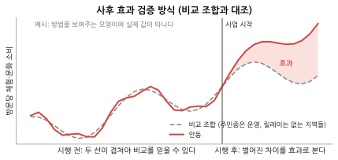
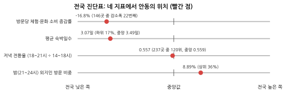
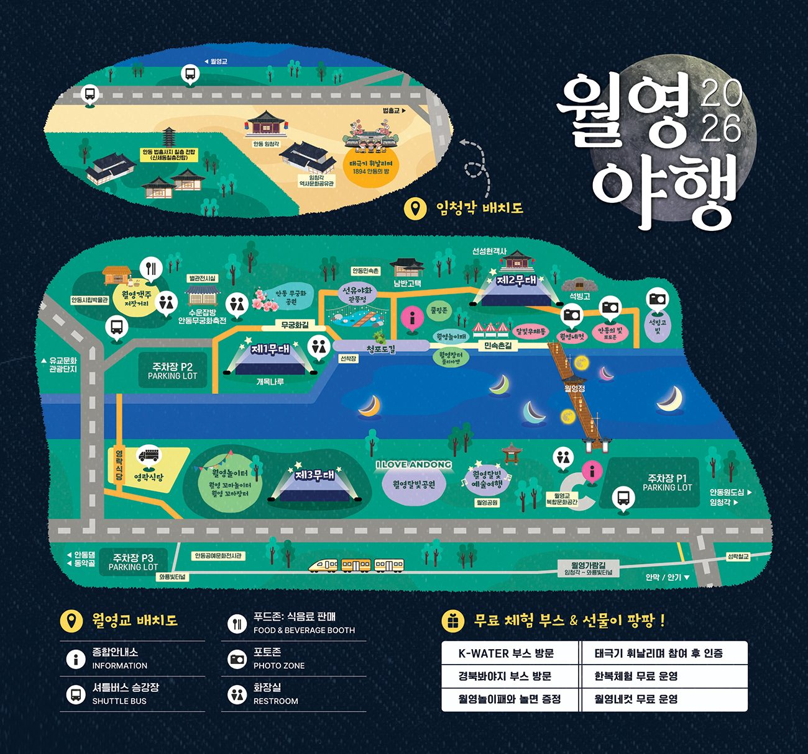

진행 흐름 : 01 안동 선정 → 02~04 기존 정책(디지털관광주민증) 점검 → 05~09 데이터로 문제 확인 → 10~11 아이디어(안동 이어드림) → 12~14 문제점, 해결방안, 기대효과 정리 → 15 서식4(활용사례) 구성 미리보기 → 16 현장 전화문의
안동은 2024년 12월 KTX-이음 중앙선이 전 구간 개통되면서 교통이 좋아졌고 방문도 실제로 늘었다. 그런데 늘어난 방문이 지역 안의 소비로 잘 이어지지 않는 곳이라서 선택했다.
처음에는 "KTX가 생겨서 당일치기가 늘었고, 그래서 소비가 줄었다"고 생각했다. 그런데 무박(당일) 비중은 2019년 86.3%, 2025년 86.4%로 거의 그대로였고, 관광객 수도 줄지 않았다.
=> 문제를 "사람은 오는데, 돈을 쓸 곳과 그곳으로 이어지는 동선이 없다"로 다시 잡았다. 먼저 안동이 이미 운영 중인 디지털관광주민증이 이 문제를 풀고 있는지 확인했다.
한국관광공사가 인구감소지역의 관광 활성화를 위해 만든 제도다. 관광객이 '대한민국 구석구석' 앱에서 그 지역의 디지털 주민증을 발급받으면, 지역 가맹점에서 QR을 보여주고 할인을 받을 수 있다.
2022년 10월 평창군과 옥천군에서 시범 운영을 시작했고, 2026년 6월 기준 52개 지역에서 운영 중이다. 안동은 2024년 6월 1일부터 참여했다.
| 시작 시기 | 새로 참여한 지역 | 누적 지역 수 |
|---|---|---|
| 2022년 10월 (시범) | 2곳 (평창군, 옥천군) | 2 |
| 2023년 5월 | 9곳 | 11 |
| 2023년 10~11월 | 4곳 | 15 |
| 2024년 6월 | 19곳 (안동시 포함, 6월 1일) | 34 |
| 2025년 4월 | 10곳 | 44 |
| 2026년 6월 | 8곳 | 52 |
< 표 1 디지털관광주민증 운영 지역 확대 (한국관광공사 보도자료, 운영 지역 목록 정리) >
안동시에 정보공개청구를 해서 혜택업체 목록과 이용 건수를 받았다(2026.9.18 회신).
| 기간 | 이용 건수 | 월평균 |
|---|---|---|
| 2024년 6~12월 | 3,750건 | 536건 |
| 2025년 | 8,503건 | 709건 |
| 2026년 1~8월 | 7,100건 | 888건 |
| 합계 | 19,353건 |
< 표 2 안동 디지털관광주민증 이용 건수 (안동시 정보공개청구 회신) >
※ 회신에는 업체별 이용 건수가 없고, '이용 건수'가 할인 적용 건인지 QR 인증 건인지도 적혀 있지 않다.
| 업종 | 업체 수 | 전체 27곳 중 비중 |
|---|---|---|
| 숙박 (고택·한옥 3곳 포함) | 7 | 25.9% |
| 식음료 (카페 2곳 포함) | 6 | 22.2% |
| 체험 | 4 | 14.8% |
| 전시·박물관 | 3 | 11.1% |
| 관광지 | 2 | 7.4% |
| 여행상품 | 1 | 3.7% |
| 확인 안 됨 | 4 | 14.8% |
| 합계 | 27 | 100% |
< 표 3 안동 디지털관광주민증 혜택업체 구성 (업종은 상호명을 보고 팀이 분류) >
| 지역 | 발급 인원 | 기준 시점 |
|---|---|---|
| 옥천군 | 47,861명 | 2023.10 |
| 단양군 | 25,000명 | 2023.10 |
| 제천시 | 5만 명 | 2024.6 |
| 안동시 | 6만 1천여 명 | 2024.9 |
< 표 4 지역별 디지털관광주민증 발급 규모 (언론 보도 기준) >
옥천군은 이 경진대회에서 디지털관광주민증으로 대상을 받았다(역대 수상작 인터뷰).
옥천이 잘 된 이유는 사람이 이미 가는 곳에 혜택을 붙였기 때문이다.
=> 제도를 새로 만들 필요는 없다. 옥천처럼 사람이 가는 곳에 혜택을 붙이고, 그 혜택을 동선으로 이어야 한다. 그래서 관광객이 실제로 어디에 가고 어디서 돈을 쓰는지를 데이터로 확인했다.
데이터 : 이동통신 방문자 수, 신용카드 외지인 관광소비 (2024년, 2026년 모두 1~8월)

< 그림 1 5개 도시 방문 및 방문당 관광소비 증감률 >
체험·문화 소비는 문화서비스, 관광유원시설, 기타레저 업종의 외지인 카드 소비를 방문 연인원으로 나눈 값이다. 골프장, 스키장, 여행업, 레저용품 쇼핑은 뺐다.

< 그림 2 146개 시·군 방문당 체험·문화 소비 증감률 >
=> 줄어든 것은 체험·문화 소비다. 어느 관광지에서 결제가 끊기는지 보려고 관광지 단위 자료를 찾았다.
한국철도공사가 코레일, KCB, SKT, 신한카드의 가명정보를 결합해 만든 분석이다. 2022년 4~6월 안동 방문객 113,556명(안동 거주자 제외)이 관광지 19곳 중 어디를 가고 어디서 카드를 썼는지 볼 수 있다. 관광지별로 방문 점유율과 소비 건수 점유율을 나란히 놓으면, 사람이 가는 곳과 돈을 쓰는 곳이 다르다.
| 관광지 | 방문 점유율 | 소비 건수 점유율 | 소비 전환 배율 (소비 ÷ 방문) |
|---|---|---|---|
| 문화의거리 (원도심) | 18.85% | 32.66% | 1.73 |
| 옥동신도시 | 15.88% | 24.51% | 1.54 |
| 월영교 | 15.24% | 6.05% | 0.40 |
| 중앙신시장 | 11.80% | 12.92% | 1.09 |
| 문화관광단지 | 11.02% | 2.28% | 0.21 |
| 하회마을 | 6.29% | 0.40% | 0.06 |
| 도산서원 | 2.27% | 0.65% | 0.29 |
< 표 5 안동 주요 관광지 방문·소비 점유율 (19개 관광지 기준) >
※ 2022년 4~6월 한 시점의 자료이고, 소비는 금액이 아니라 건수다. 시간대 정보는 없다. 경북도청(방문 8.58%)은 편의점, 주유 같은 업무 소비가 섞여 있어 표에서 뺐다.
=> 결제가 끊기는 곳은 두 곳이다. 낮에 보고 가는 하회마을, 외곽을 돌고 돌아오며 들르는 월영교.
관광지 검색 수를 그 시·군 전체 목적지 검색 수로 나눠 2018년과 2025년을 비교했다. 안동 전체 목적지 검색은 43만 건에서 127만 건으로 2.95배 늘었다.
| 관광지 | 2018년 | 2025년 | 증감률 |
|---|---|---|---|
| 하회마을 (안동시) | 11.4% | 5.1% | -54.8% |
| 월영교 (안동시) | 5.8% | 3.7% | -37.0% |
| 도산서원 (안동시) | 3.2% | 2.1% | -33.9% |
| 불국사 (경주시) | 4.8% | 3.1% | -35.8% |
| 동궁과월지 (경주시) | 2.5% | 1.6% | -35.9% |
| 경주월드 (경주시) | 2.2% | 1.5% | -31.5% |
| 부석사 (영주시) | 10.8% | 8.4% | -22.4% |
< 표 6 관광지 목적지 검색 비중 변화 (관광지 검색 ÷ 시·군 전체 목적지 검색) >
=> 볼거리 수요는 있는데 하회마을은 결제도, 검색 관심도 줄고 있다. 관람 뒤에 이어질 유료 체험이 필요하다.
데이터 : 코레일 안동역 시간대별 승하차 (KTX-이음, 새마을, 무궁화 전체)

< 그림 3 안동역 주말 시간대별 승차 인원 (2026년 1~8월 합계) >
밤에 안동에 머무는 사람 자체는 적지 않다. 21~24시 외지인 방문 비중은 8.89%로 전국 상위 36%이고, 저녁 전환율(18~21시 ÷ 14~18시)도 0.557로 전국 중앙값(0.559)과 같다.
=> 당일치기가 늘어난 것이 아니다. 밤에 갈 곳과 이동 수단이 부족하고, 열차 막차(21~22시)와 버스 막차(18:45)가 밤 동선의 시간 제약이다.
소상공인 상가정보(2026.6.30)로 원도심(안동구시장 기준)과 월영교 반경 1km 음식점을 업종별로 셌다.
| 업종 | 원도심 (곳) | 원도심 비중 | 월영교 (곳) | 월영교 비중 |
|---|---|---|---|---|
| 한식 | 342 | 44.8% | 10 | 58.8% |
| 기타 간이음식 | 161 | 21.1% | 0 | 0.0% |
| 카페 (비알코올) | 127 | 16.6% | 6 | 35.3% |
| 주점 | 86 | 11.3% | 0 | 0.0% |
| 중식 | 15 | 2.0% | 0 | 0.0% |
| 양식 | 13 | 1.7% | 1 | 5.9% |
| 일식 | 12 | 1.6% | 0 | 0.0% |
| 구내식당·뷔페 | 5 | 0.7% | 0 | 0.0% |
| 동남아시아 | 3 | 0.4% | 0 | 0.0% |
| 합계 | 764 | 100% | 17 | 100% |
< 표 7 원도심과 월영교 반경 1km 음식점 업종 구성 (소상공인 상가정보 2026.6.30) >
※ 상가정보는 음식점 업종만 뽑은 자료라 소매점 같은 다른 업태는 들어 있지 않다.
월영교 반경 1km 음식점 18곳(소상공인 상가정보 17곳 + 현장에서 확인한 카페 1곳)의 영업 종료 시각을 확인했다.
| 상호 | 업종 | 영업 종료 | 비고 |
|---|---|---|---|
| 맛50년헛제사밥 | 한식 | 20:00 | |
| 안동댐간고등어직영식당 | 한식 | 20:00 | |
| 옛날촌동네 | 한식 | 20:00 | |
| 호반정 | 한식 | 20:00 | |
| 고센피제리아안동댐점 | 양식 | 20:30 | |
| 삼일가든 | 한식 | 20:30 | |
| 이정식당 | 한식 | 20:30 | |
| 안동김대감 | 한식 | 21:00 | |
| 와룡가든 | 한식 | 21:00 | |
| 라라룬 | 카페 | 22:00 | |
| 월영당 | 카페 | 22:00 | |
| 카페구름마루 | 카페 | 22:00 | 주민증 혜택업체 |
| 콩깍지 | 한식 | 22:00 | |
| 월영교달방 | 카페 | 23:00 | |
| 핸즈안동댐점 | 카페 | 23:00 | |
| 나우커피안동댐점 | 카페 | 24:00 | |
| 카페앤드레스토랑 | 카페 | - | 폐업 |
| 동해가든식당 | 한식 | - | 폐업 |
< 표 8 월영교 반경 1km 음식점 영업 종료 시각 >
| 항목 | 원도심 | 월영교 |
|---|---|---|
| 반경 1km 음식점 | 764곳 | 17곳 |
| 그중 주점 | 86곳 (11.3%) | 0곳 |
| 소비 전환 배율 (철도공사, 2022) | 1.73 (문화의거리) | 0.40 |
| 시내버스 막차 (평일, 112번) | 월영교행 18:45 | 원도심행 19:00 |
< 표 9 원도심과 월영교 비교 (상가정보 2026.6.30, 한국철도공사 2022, 안동시 버스정보시스템) >
한국관광 데이터랩의 경북 야간 검색 상위 135칸(9개 분류 × 상위 5곳 × 3개 기간) 중 안동은 5칸이고, 그중 3칸이 월영교다. 경주는 62칸이다. 밤에 찾는 안동 관광지는 사실상 월영교 하나다.
=> 월영교는 사람이 모이는데 밤에 밥 먹고 머물 곳이 없다. 원도심은 가게가 많지만 밤에 월영교까지 가는 교통이 없다.
앞에서 확인한 세 가지를 하나의 동선으로 이었다.
(1단계) 원도심 식사 후 영수증 QR 인증 → 유료 체험 혜택 ⇒
(2단계) 관광택시의 낮 운행이 끝난 뒤, 원도심 → 월영교 저녁 이동을 붙인다 ⇒
(3단계) 월영교 야간 팝업 포차에서 저녁 식사, 주류
운영 시간은 18:30 ~ 21:00으로 잡았다. 안동역 주말 승차가 18~19시에 가장 많고, 막차가 21~22시이기 때문이다(그림 3). 새 앱을 만들지 않고 디지털관광주민증 QR 위에 세 단계를 얹는다.
05~09에서 확인한 내용을 제출서 문제점 문장으로 정리했다.
안동시는 방문객과 숙박 소비가 크게 증가하였으나, 레저용품 쇼핑을 제외한 실질 체험·문화 소비는 2024년 1~8월 방문당 183.5원에서 2026년 같은 기간 152.7원으로 -16.8% 감소했습니다. 같은 기간 전국 146개 시·군의 중앙값이 -2.0%인 점에 비추어, 안동은 감소폭이 22번째로 큰 지역입니다. 수준 또한 경주(302.3원)의 절반(50.5%)에 머물러 있습니다.
특히 2026년 1~8월 안동의 관심관광지 검색 중 역사유적지 비중은 26.4%로 경주(18.4%)보다 높아, 볼거리 수요 자체는 형성되어 있습니다. 그러나 대표 유적인 하회마을은 방문객 점유율 6.29%에 비해 소비 건수 점유율이 0.40%에 그쳐 소비 전환 배율이 0.06에 불과합니다(원도심 1.73). 목적지 검색에서도 하회마을 비중은 11.4%에서 5.1%로 낮아져, 같은 기간 -30%대에 머문 경주 불국사·동궁과월지 등 전국 주요 유적과 뚜렷이 구분되는 하락을 보였습니다. 관람 수요가 지역 내 유료 결제로 이어지지 않는 구조적 단절입니다.
안동 외곽 주요 관광지 방문객의 절반 이상이 월영교를 함께 찾습니다(만휴정 54.8%, 도산서원 54.2%). 그러나 월영교 반경 1km에서 영업 중인 음식점 16곳 가운데 21시까지 식사가 가능한 곳은 3곳(18.8%)이며, 식당 7곳(43.8%)이 20:00~20:30 사이 영업을 종료하여 밤 시간대 식음 인프라가 제한적인 상황입니다. 주점은 한 곳도 없습니다.
월영교의 방문 점유율(15.24%) 대비 소비건수 점유율은 6.05%(소비 전환 배율 0.40)에 그치며, 소비 건수 중 편의점이 25.8%, 숙박이 0.3%를 차지합니다. 반면 실질 소비 상권인 원도심(음식점 764곳, 소비 전환 배율 1.73)은 월영교와 3.2km 떨어져 있으나, 두 곳을 잇는 시내버스는 112번 한 노선이고 원도심 출발 막차가 18:45(평일)여서 19시 이후에는 대중교통 연결이 없습니다. 유입된 방문객이 밤 시간대 지역 상권 소비로 이어지지 못하고 있습니다.
1단계 : [식음 → 체험 연계] 원도심 F&B 이용객 대상 유료 체험·문화 소비 결제 전환 유도
2단계 : [야간 이동성 확보] 관광택시 저녁 재배치로 원도심 → 월영교 이동
3단계 : [야간 식음 체류 확장] 월영교 권역 청년창업·소상공인 야간 팝업 포차 거리 조성
서식4는 개조식 2~3장이고, 머리칸과 본문 네 칸(1 문제점, 2 데이터 활용 방안, 3 사업 개선·적용 사례, 4 추진성과·기대효과)이 정해져 있다(공모요강). 지금까지의 분석과 결과물 7개가 어느 칸에 들어가는지 정리했다.
| 칸 | 분량 | 들어가는 것 |
|---|---|---|
| 머리칸 | 0.4장 | 제목, 데이터랩 데이터, 타분야 데이터, 성과분야, 핵심성과, 계량성과 |
| 1) 문제점 | 0.4장 | 문제 수치 3개 (먼저 흔한 설명 2개 기각) |
| 2) 데이터 활용 방안 | 1장 | ① 혜택 배치 진단, ② 운영 시간 창, ④ 월영교 영업 종료 (본문 그림 2개) |
| 3) 사업 개선·적용 사례 | 0.6장 | 운영안 표, ③ 교통 공백 확인 |
| 4) 추진성과·기대효과 | 0.6장 | ⑤ 예상 효과, ⑥ 사후 검증계획, ⑦ 전국 진단표 (본문 표 1개) |
| 합계 | 약 3장 | 나머지 상세는 참고자료(zip)로 제출 |
< 표 10 서식4 칸별 분량 배분 >
| 항목 | 초안 |
|---|---|
| 응모작 제목 | 사람 없는 곳에 붙은 혜택, 막차 앞에서 끊긴 밤: 데이터로 다시 잇는 안동 이어드림 (초안, 팀 결정 필요) |
| 데이터랩 데이터 (필수) | 지역별 관광 현황(외지인 방문, 시간대), 신용카드 관광소비, 읍면동 방문자, 중심·연관 관광지, 내비게이션 검색, 야간관광 현황, 축제 현황 |
| 타분야 데이터 (선택) | 코레일 안동역 시간대별 승하차, 소상공인 상가(상권)정보, 안동시 디지털관광주민증 혜택업체(정보공개청구), 한국철도공사 8대 도시 가명결합 분석, 안동시 버스정보시스템 시간표 |
| 성과분야 (1개) | 전략수립 및 기획 |
| 핵심성과 (1~2줄) | 데이터랩 방문·소비 자료와 철도·상가·주민증 자료를 결합해 혜택 배치의 공백과 막차 제약을 찾아내고, 원도심과 월영교를 잇는 3단계 야간 릴레이 운영안을 설계 (초안) |
| 계량성과 | 현장조사 후 입력. 섭외 동의 업소 수, 안내카드 배포 수 대비 QR 스캔 수, 택시 호출 대기시간처럼 실제로 센 숫자만 쓴다. |
< 표 11 서식4 머리칸 초안 >
※ 공모요강의 계량성과 예시가 모두 실적(방문객 50% 증가 등)이라 가장 약한 칸이다. 운영 시간 창이나 대상 인원 같은 설계 수치는 성과가 아니라서 이 칸에 쓰지 않는다.
그 앞에 흔한 설명 두 개를 한 줄씩 기각한다. 관광객은 줄지 않았고(방문 +5.6%), 당일치기도 늘지 않았다(무박 86.3% → 86.4%).
분량을 가장 많이 쓰는 칸이다. ①②는 성과가 아니라 운영안의 값을 정한 분석이라 이 칸에 들어간다.
① 식음 → 체험 연결 : 혜택 배치 진단
외지인이 가장 많이 찾는 중구동(12.5%)에는 혜택업체가 0곳이고, 방문 12번째인 도산면(2.4%)에 6곳이 몰려 있다. 혜택은 유교문화 시설에 붙어 있고, 사람이 모이는 원도심에는 없다.

< 그림 4 읍면동별 외지인 방문 점유율과 주민증 혜택업체 수 >
※ 외지인 방문은 데이터랩 읍면동별 외지인 방문자 수(2026년 1~8월 합계), 혜택업체는 안동시 정보공개청구 회신(9월 17일 기준 27곳). 읍·면 주소는 그대로 쓰고, 도로명만 있는 9곳은 소상공인 상가정보에서 같은 주소나 같은 도로의 행정동으로 찾았다. 읍면동 방문에는 업무 방문이 섞인다(풍산읍은 바이오단지 영향). 그래서 관광 목적이 뚜렷한 중구동과 도산면 비교만 핵심으로 쓴다.
② 운영 시간 창 : 안동역 주말 승차 (그림 3)
④ 야간 팝업 : 월영교 1km 영업 종료 시각 (표 8)
2)에서 나온 숫자가 운영안의 어느 값을 정했는지 보여주는 칸이다.
| 운영안 항목 | 정한 값 | 정한 근거 |
|---|---|---|
| 릴레이 운영 시간 | 18:30 시작 → 21:00 종료 | 주말 승차 18~19시 최대(13,454명), 막차 21~22시 (②) |
| 1단계 섭외 우선 권역 | 중구동 (원도심) | 외지인 방문 1위(12.5%)인데 혜택업체 0곳 (①) |
| 3단계 팝업이 채울 것 | 21시 이후 식사, 주점 | 월영교 식당 10곳 중 7곳이 20:30까지 마감, 주점 0곳 (④). 월영야행은 푸드트럭 16·장터 8로 이미 운영 |
| 야간 이동 수단 | 관광택시 저녁 재배치 협의 | 112번 막차 18:45, 관광택시는 오전 8~9시 출발·약 5시간 운행(전화문의) |
| 부스 개수, 차량 대수 | 정하지 않음 | 처리량과 견적이 없어 근거 없이 숫자를 만들지 않는다 |
< 표 12 운영안과 그 값을 정한 근거 >
③ 교통 공백 확인 : 밤에 원도심에서 월영교로 실제로 갈 방법이 있는지 방향별로 본다. "혜택업체 0곳"과 "교통수단 0개"는 다른 이야기라서 따로 쟀다.
| 시간대 (평일, 기점 출발) | 원도심 → 월영교 | 월영교 → 원도심 |
|---|---|---|
| 17시 | 1편 (17:55) | 0편 |
| 18시 | 1편 (18:45) | 1편 (18:25) |
| 19시 | 0편 | 1편 (19:00) |
| 20시 이후 | 0편 | 0편 |
< 표 13 원도심과 월영교를 잇는 112번 시내버스 저녁 운행 (안동시 버스정보시스템, 2026.9.22 조회) >
※ 기점 출발 시각이라 실제 통과는 더 늦다. 공휴일 시간표는 게시되어 있지 않다. 관광택시 저녁 재배치는 16절 전화문의. 일반 택시 호출 대기시간과 요금은 토요일 저녁 현장조사에서 잰다. 수요가 부족하면 "상시 운행 부적합"도 결과로 인정한다.
정책을 아직 시행하지 않았으므로 "소비가 늘었다"고 쓰지 않는다. 지금 낼 수 있는 성과와 시행 후에만 말할 수 있는 성과를 나눈다.
| 구분 | 지금 만들 수 있는 것 | 보고서에서 부르는 이름 |
|---|---|---|
| 분석 결과 | 운영 시간 창(18:30~21:00), 혜택 배치 진단, 월영교 영업 종료, 전국 진단표 | 데이터 기반 설계 결과 |
| 현장 관측 | 섭외 동의 업소 수, 안내카드 배포 수 대비 QR 스캔 수, 이동·대기 실측 | 현장 관측 성과 (관심 반응이지 소비 증가가 아님) |
| 예상 효과 | 운영일 × 권역 × 자격 × 노출 범위의 방문기회에 전환율을 곱한 체험·팝업 지출 범위 | 조건부 예상 효과 |
| 정책 효과 | 시행 후 비교 지역과 대조한 증가분 | 시행 후에만 말할 수 있음 |
< 표 14 성과의 네 가지 구분 >
⑤ 행동검증 및 예상 효과 계산
돈이 쓰이는 지점은 체험 결제와 팝업 결제 두 곳이다. 야간 이동은 결제 없는 통로다.

< 그림 5 예상 효과 계산 구조 >
| 지표 | 보수 | 기준 | 낙관 | 값의 성격 |
|---|---|---|---|---|
| 대상 방문기회 | 계산 후 | 계산 후 | 계산 후 | 추정 |
| 체험·팝업 이용량 | 계산 후 | 계산 후 | 계산 후 | 수용량 반영 |
| 참여자 총본인부담액 (지출 ① + ②) | 계산 후 | 계산 후 | 계산 후 | 총지출 추정 |
| 안동 내 추가 소비 | 계산 후 | 계산 후 | 계산 후 | 사업이 없었을 때 지출을 뺀 값 |
| 예산 1원당 추가 소비 | 계산 후 | 계산 후 | 계산 후 | 운영 참고 지표 (비용편익비 아님) |
< 표 15 예상 효과 계산표 (값은 체험 가격, 운영 견적이 들어오면 채움) >
⑥ 사후 효과 검증계획서
사업을 시작하기 전에 "이 기준으로 판단하겠다"를 정해 둔다. 주민증은 운영하되 릴레이는 없는 지역들을 섞어 안동의 과거 추이를 따라가는 비교 조합을 만들고, 시행 후 벌어진 차이를 효과로 본다. 과거에 두 선이 겹친다는 것은 방법이 쓸 만하다는 뜻이지 정책 효과의 증명은 아니다.

< 그림 6 사후 효과 검증 방식 (예시 그래프, 실제 값 아님) >
| 항목 | 시행 전에 정해 둘 내용 |
|---|---|
| 주 지표 | 방문당 체험·문화 소비 (문제를 연 지표 그대로) |
| 비교 지역 | 디지털관광주민증은 운영하지만 릴레이는 없는 지역. 운영 지역 52곳의 시작 시기 확보 |
| 보조 지표 | 야간 체류, 기존 점포 매출, 민원, 취소율 |
| 판단 기준 | 효과 크기, 불확실성, 비용, 부작용을 함께 본다. "비교 지역보다 조금이라도 높으면 성공"으로 정하지 않는다 |
| 확정 시점 | 사업 시작 전. 이후 바꾸면 이유와 시점을 공개 |
< 표 16 사후 효과 검증계획서에 미리 정할 내용 >
⑦ 전국 진단표
같은 네 지표로 다른 시·군도 자기 위치를 확인할 수 있게 만든다. 안동은 체험·문화 소비가 줄어드는 속도와 숙박 기간에서 하위권이고, 저녁 이동은 평범하다. 문제는 시간대가 아니라 밤에 갈 곳이라는 뜻이다.

< 그림 7 전국 진단표의 네 지표와 안동의 위치 >
※ 정책 효과 점수가 아니라 추가 진단이 필요한 지역을 골라내는 탐색 지표다. 가중치를 바꿨을 때 순위가 얼마나 흔들리는지도 함께 적는다.
2단계 이동과 3단계 팝업이 실제로 가능한지 기관에 물었다. 숫자로 나온 것과 아직 답변 대기인 것을 나눠 적는다.
상대 : 김모음 대리 (전화가 잘 들리지 않아 직위는 확실하지 않음). 한국정신문화재단이 매년 월영야행을 진행한다.

< 그림 8 2026 월영야행 행사장 배치도 (한국정신문화재단 자료, 전화문의 때 받은 배치도) >
※ 배치도에서 식음 자리는 시립박물관 옆 월영객주 저잣거리와 주차장 P3(영락식당)다. 월영교 위가 아니라 다리 주변 공공 부지다.
상대는 성함을 밝히지 않았다. 시간대별 운행 건수는 없다고 했다.
=> 밤에 빈 관광택시가 대기한다고 단정할 수 없다. 저녁 이동은 비수기 3~4대와 개인 영업 차량을 18:30~21:00 노선으로 재배치하는 협의 과제로 남긴다.
| 데이터 | 출처 | 기간 | 이 자료로 본 것 |
|---|---|---|---|
| 이동통신 방문자 수 | 한국관광 데이터랩 | 2018.1~2026.8 | 방문 증감, 방문당 소비의 분모, 시간대별 방문 |
| 신용카드 외지인 관광소비 | 한국관광 데이터랩 | 2019.1~2026.8 | 방문당 관광소비, 체험·문화 소비 |
| 숙박일수별 관광객 | 한국관광 데이터랩 | 2018.1~2026.8 | 무박(당일) 비중 |
| 읍면동별 외지인 방문 | 한국관광 데이터랩 | 2026.1~8 | 주민증 혜택업체 위치와 방문 비교 |
| 내비게이션 목적지 검색 | 한국관광 데이터랩 (T맵) | 2018~2026.8 | 관광지별 검색 비중, 역사유적지 검색 |
| 야간관광 현황 | 한국관광 데이터랩 | 2024~2026 | 경북 야간 검색 상위 관광지 |
| 8대 도시 관광분석 | 한국철도공사 (가명정보 결합) | 2022.4~6 | 관광지별 방문·소비 점유율, 동시 방문 |
| 안동역 시간대별 승하차 | 코레일 (팀원 취합) | 2024.1~2026.8 | 주말 저녁 승차, 막차 시간 |
| 상가(상권)정보 | 소상공인시장진흥공단 | 2026.6.30 | 반경 1km 음식점·주점 수 |
| 디지털관광주민증 혜택업체, 이용 건수 | 안동시 정보공개청구 회신 | 2024.6~2026.8 | 안동 주민증 현황 |
| 주민증 운영 지역 | 한국관광공사 보도자료, 누리집 | 2022~2026 | 제도 확대 연혁 |
| 시내버스 시간표 | 안동시 버스정보시스템 | 2026.9.22 조회 | 원도심↔월영교 막차 |
| 월영야행 부스·장터 운영 | 한국정신문화재단 전화문의 (김모음 대리) | 2026.9.22 | 월영교 식당·푸드트럭 설치 가능 조건과 자리 |
| 안동관광택시 운행 관행 | 안동시관광협의회 전화문의 | 2026.9.22 | 출발 시각, 운행 시간, 성수기 만차, 비수기 3~4대 |
| 월영교 음식점 영업 종료 시각 | 팀 현장 확인 | 2026.9.19 | 월영교 야간 식음 현황 |
| 원도심 식당 영업시간 표본 | 한국관광공사 TourAPI 등록 정보 | 2026.9.22 조회 | 원도심 저녁 영업 (60곳 중 8곳 확인) |
| 디지털관광주민증 발급 규모 | 문화체육관광부 보도자료, 언론 보도 | 2023~2024 | 전국 누적 발급, 지역별 발급 인원 |
| 역대 수상작 인터뷰 (옥천 관광주민증) | 한국관광공사 | 2023 | 주민증 성공 사례 |
< 표 17 이 문서에 쓴 데이터 >
결과물을 만들거나 참고하려고 모아 둔 자료다. 파일은 팀 공유 폴더 조사/와 data/에 있다.
| 데이터 | 출처 | 내용 | 쓸 곳 |
|---|---|---|---|
| 체험 프로그램 목록·가격 | 각 시설 공식 안내, 전화 | 14개 체험의 가격·운영시간. 18시 이후 운영은 월영교 문보트·황포돛배뿐 | 1단계 연결 체험 선정 |
| 2026 탈춤축제 프로그램 | 축제 누리집, 리플릿 | 일정 413회, 18시 이후 시작 99회. 탈춤사랑쿠폰은 원도심 상가에서 사용 | 축제 기간 혜택 |
| 야간관광 명소 100선 (밤밤곡곡 100) | 문화체육관광부·한국관광공사 (2023) | 100곳 전체. 경북 15곳 중 안동 2곳(월영교, 선유줄불놀이) | 야간 명소 비교 |
| 야시장 운영 사례 | 시·구청 보도자료 | 8곳. 부스 14~41개, 주말 2~3일 운영 | 3단계 팝업 규모 참고 |
| 안동관광택시 요금·코스 | 안동시관광협의회 누리집 | 5시간 125,000원(현재 할인가 95,000원), 코스 9개 중 5개가 월영교 경유 | 2단계 요금 참고 |
| 주요관광지점 입장객 | 관광지식정보시스템 | 38개 지점, 2018~2026.6. 월영교 2023년 68만 2,541명(2022·2023만 있음) | 관광지 방문 규모 |
| 버스정류장·안내기 | 안동시 버스정보시스템 | 정류장 3,305개, 안내기 316곳. 원도심(구시장 500m) 20개 중 17개 설치 | 안내 매체 위치 |
| 전국 문화관광축제 방문·소비 | 한국관광 데이터랩 | 56개 축제. 탈춤 외지인 방문당 9,368원(56개 중앙 9,095원) | 팝업 객단가 상한 참고 |
| 강남동 외지인 관광소비 | 한국관광 데이터랩 화면 | 1~8월 102.7억 원(2024) → 109.5억 원(2026) | 월영교 소재 동 참고 |
| 경북 동 단위 야간 방문·소비 | 한국관광 데이터랩 야간관광 | 평화동 야간 방문 비율 경북 1위, 야간 소비 상위 10에는 태화동만 | 야간 체류 참고 |
| 고택 목록 | 팀원 취합 | 안동 고택 559곳(숙박 여부 포함) | 숙박 연계 참고 |
| 영업 중 일반음식점 인허가 | 행정안전부 인허가 자료 | 안동 영업 중 일반음식점 목록 | 1단계 섭외 모집단 |
| 역대 수상작 24편 | 한국관광공사 수상작 인터뷰 | 문제·해결·성과 구조 분석 (강진 반값여행, 옥천 관광주민증 등) | 차별점, 성공 사례 |
< 표 18 조사했지만 이 문서에는 쓰지 않은 데이터 >